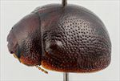
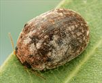
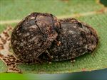
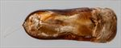
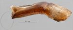
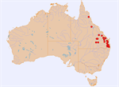

Click on images to enlarge

Male, Cania Gorge, Queensland

Female, Rolleston, central Queensland

Adults, Moore, S.E. Queensland

Aedeagus, dorsal view (Dululu, central Queensland)

Aedeagus, lateral view (Dululu, central Queensland)

Distribution
Ta35
Name
Trachymela sp. Ta35
Reference specimen
2000-344, Mt Crosby, Brisbane, SE Queensland.
Adult Description
Length: ♂ 4.5–5.3 mm (n=29), ♀ 4.6–5.8 mm (n=43).
Colouration:
Head: very dark brown, sometimes with anterior edge of clypeus black, mandibles very dark brown with black tips or completely black, labrum sometimes lighter brown; antennae uniformly straw-brown, rarely with proximal antennomeres fractionally darker.
Pronotum: dark brown, concolorous with or fractionally darker than head, usually with lateral marginal areas slightly lighter-coloured.
Scutellum: very dark brown, concolorous with or somewhat darker than adjacent area of pronotum, or black.
Elytra: uniformly very dark brown, fractionally darker shade than disc of pronotum, sometimes with some longitudinal weals that are fractionally lighter-coloured in posterior third, humeral callus concolorous with surrounds.
Venter & Legs: head and thoracic ventrites largely dark brown, even black, abdominal segments usually slightly paler, legs with femur mostly dark brown, distal segments a lighter shade, epipleura either completely black or brown anteriorly, grading to black towards posterior.
Cuticular Wax: brown, with grey patches and/or longitudinal streaks on the elytra– these may be of small extent or cover a considerable area, especially in posterior half, greyish streaks on either side of the scutellum often extend anteriorly onto the pronotum; the wax layer can be quite thick but is usually thinner and less even on pronotum and anterior portion of elytra.
Morphology:
Body Shape: very small, almost hemispherical, greatest height viewed laterally is clearly in front of middle of elytral margin.
Head: punctures moderate in size (pd ≈ 1.5–2× ef) and evenly and densely distributed. Antennae short (AL/BL: ♂ 34–37%, ♀ 32–33%), filiform.
Pronotum: almost evenly curved transversely, very slightly explanate at extreme margins, lacking a foveal depression, a small, often approximately round elevated and less densely punctured area present in line with each eye, puncturation clearly impressed in discal area, evenly to slightly unevenly distributed and moderately dense, becoming much coarser at lateral margins. Front margins join lateral margins in a smoothly rounded right-angle, with lateral margin initially straight or very lightly curved for a short length and then curving smoothly and gradually towards rear margin.
Scutellum: surface smooth or slightly rough, unpunctured or lightly punctured with smaller punctures than on adjacent area on pronotum.
Elytra: surface evenly curved, punctures distinct and evenly and closely distributed (pd ≈ 1.5–2 pd) over anterior two-thirds of disc, interstices flat with much smaller punctures scattered sparingly over them, interstices in posterior third more convex, producing a rougher surface with some interstices merging to form short longitudinal weals, surface continuous under humeral callus, elytral suture carinate in posterior third, lateral margins straight, rarely with anterior (from under humeral callus forward) oblique. Vertical extension of epipleura considerable (HCE/PW = 0.34–0.39).
Venter: prosternal process narrowest anteriorly and gradually widening towards posterior, rarely almost parallel-sided, closed anteriorly, very sparse scatter of short setae at rear of prosternal process and mesoventrite, a single seta on anterior and median trochanter; front edge of metaventrite beveled, truncate; inner edge of epipleurae lacking setae.
Male Genitalia (Aedeagus):
Dimensions: LPE/BL = 34–39%.
Dorsal view: sides of shaft slightly sinuate, widest at base then narrowing towards apex before widening again slightly towards ostium, from there the sides converge towards apex in a smooth arc, dorsal surface smoothly curved with short dorso-median channel present, dorso-lateral channels broad and well developed, ostium large, tip protruding slightly.
Lateral view: shaft curved very slightly near base, then almost straight throughout central and apical regions, thinning towards apex over 15% of length, tip deflexed, flagellum very thin and loosely curved or spiraled.
Immature Stages
Unknown.
Similar species
Ta36: this species is rather similar in size and sculpture to Ta35, and the two species are often found together (both utilising the same host, Corymbia tessellaris). They can be distinguished by the considerably darker shade of Ta35 (both dorsally and ventrally), the brown rather than black epipleura of Ta36 and the two black maculae on each side of the prothorax in Ta36. The cuticular wax on Ta36 is much more uniform in colour and distribution, lacking the grey longitudinal bands that are present in Ta35.
Ta30: this species is somewhat larger, less convex in outline, lighter in colouring and has proportionally longer antennae. Its inner elytral epipleura are brown throughout and it feeds on Angophora.
Ta59: a very similar dark and convex species lacking verrucae, also with black inner epipleura, although slightly larger and found on Angophora costata.
Notes
Taxonomy: Ta35 is a small, usually almost uniformly dark brown species lacking verrucae on its elytra. It is a a member of the orbicularis-group, defined by the lack of verrucae and the particular structure of the aedeagus.
Host Associations: The preferred host of this species is the ghost gum Blakella tessellaris, with 51 of the 58 host records from that species. There is a single record from B. maculata and 3 from unspecified Corymbia sp (s.l.). A single record from E. crebra, and 2 from E. persistens (both teneral specimens on the same tree) are likely not indicative of host utilisation.
Morphological Variation: A single female specimen from far northern Queensland (Mt Carbine), collected from an unidentified Corymbia (sensu lato), is included here. It may be a different species, although morphologically it fits well within the range of variation of typical Ta35 in almost all respects, differing principally in the elytral puncturation being denser than is typical for that species.
Copyright © 2026. All rights reserved.
{kind=link}
{kind=link}
{kind=link}
{kind=link}
{kind=link}
{kind=link}